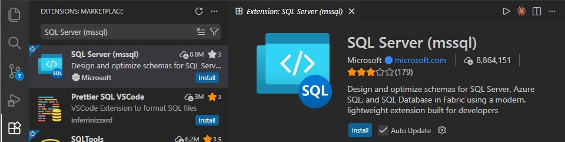
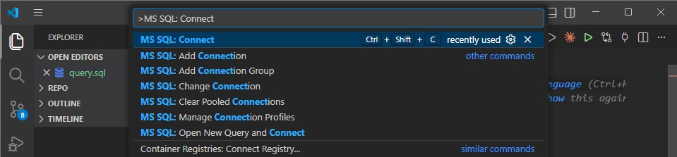
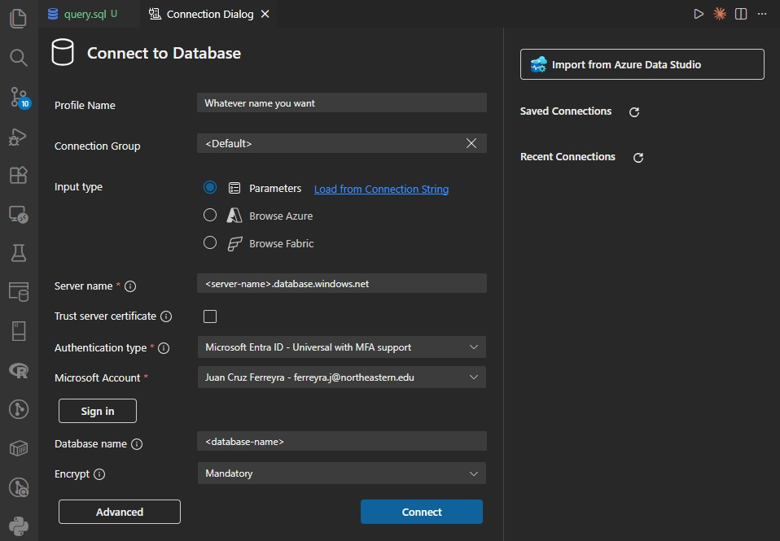
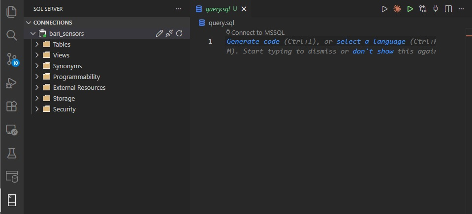
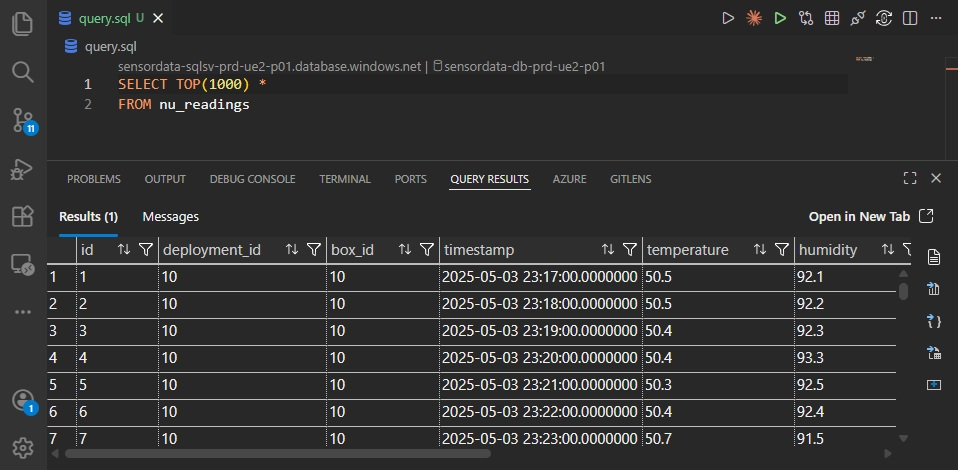
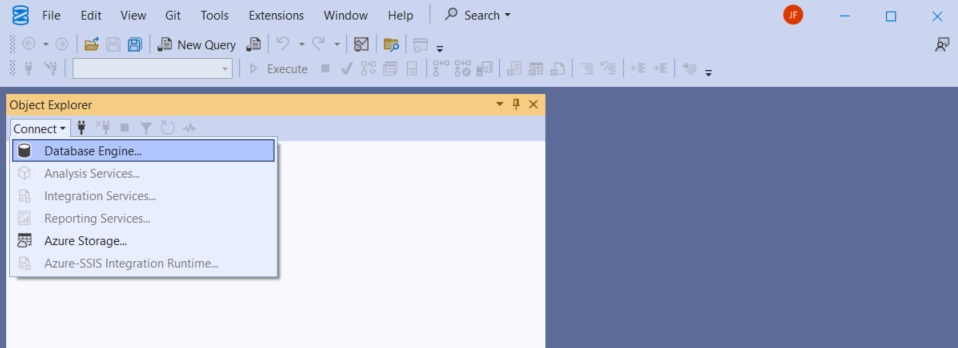
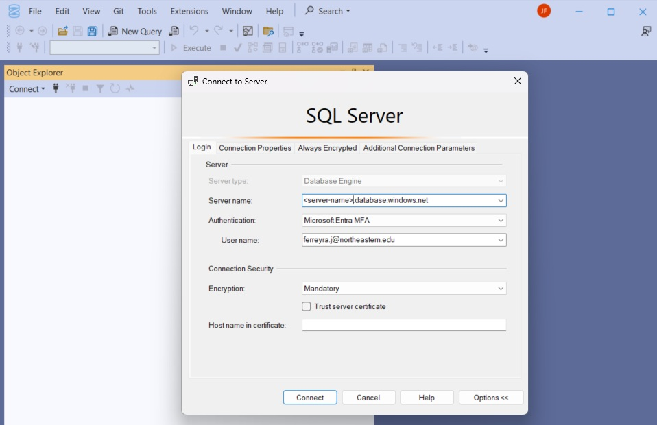
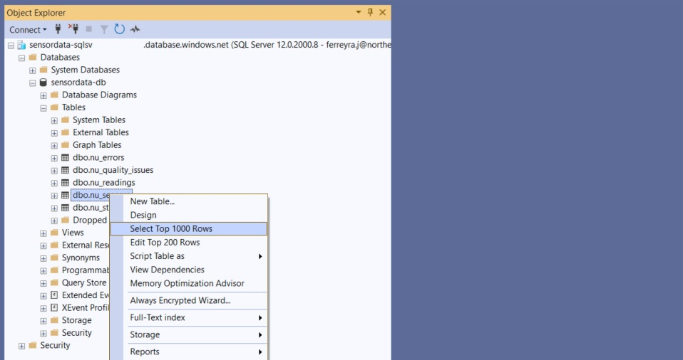
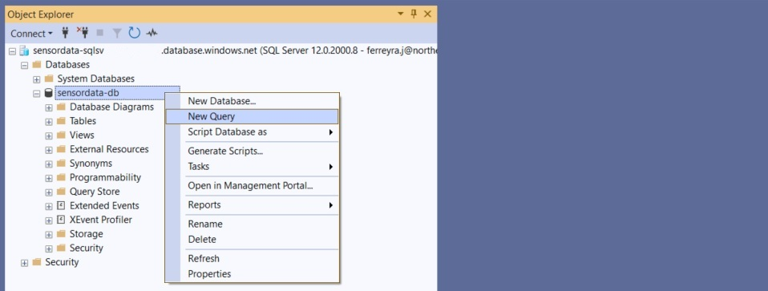
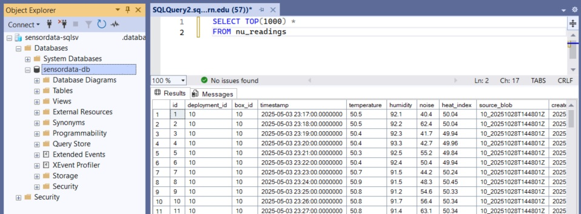

Connecting to the Database
This page covers how to establish connections to the Azure SQL Database for querying sensor data.
Prerequisites
1. Azure Account Access
You need an Azure account with appropriate permissions to access the database resource.
2. Authentication Method
One of the following:
- Microsoft Entra ID (formerly Azure AD) - Uses your Azure organizational account (recommended for most users)
- Managed Identity - Automatic authentication for Azure resources (used by Function Apps)
- SQL Authentication - Traditional username/password (legacy, less secure)
See Authentication Methods below for detailed explanations.
3. Network Access
The database uses private networking by default. You need either:
- Access from within the Azure VNet (automatic for Azure resources)
- Temporary public access enabled from the Azure Portal (see Network Access below)
For more details on the networking architecture, see Networking Reference.
Need Help?
If you're unable to meet any of these prerequisites (Azure access, authentication setup, or network configuration), contact Juan Cruz (Database access, Azure resource management, troubleshooting).
Connection Methods
Choose a connection method based on your workflow and technical comfort level.
Azure Portal Query Editor
What it is: Browser-based SQL query interface built into the Azure Portal.
Best for: Quick queries, one-off checks when already in the portal.
Who can use this: Technical administrators with Azure Portal access only. Researchers should use Visual Studio Code or Python instead.
Limitations: Cannot save queries, basic interface, requires portal access.
Step-by-Step: Connecting via Query Editor
- Navigate to your SQL Database in the Azure Portal
- Select "Query editor (preview)" from the left sidebar
- Authenticate with your Azure credentials
- Start writing SQL queries in the editor
- Click "Run" to execute
Note: Query editor requires portal access and may require public network access to be enabled.
Visual Studio Code with SQL Extension (Recommended)
What it is: Microsoft's modern code editor with SQL Server extension. Replaces the retired Azure Data Studio.
Best for: Regular data analysis, query development, exploring database structure.
Who can use this: Anyone with database credentials or Entra ID authentication. Recommended for researchers needing regular data access.
Download: Visual Studio Code
Limitation: Impractical for complex database administrations.
Step-by-Step: Installing and Connecting with VS Code
Installation
1. Install Visual Studio Code
Download and install from code.visualstudio.com. Multiple installation options available for Windows, Mac, and Linux.
2. Install SQL Server Extension
- Open VS Code
- Click Extensions icon in left sidebar (or press Ctrl+Shift+X / Cmd+Shift+X)
- Search for "SQL Server (mssql)"
- Click Install on the extension by Microsoft

Creating a Connection
1. Create a SQL File
Create a new file with .sql extension (e.g., queries.sql) and open it in VS Code.
2. Open Connection Dialog
Press F1 to open Command Palette, then type and select MS SQL: Connect

3. Configure Connection Profile
You'll be prompted for connection details:

Profile Name: Choose any descriptive name (e.g., "bari_sensors")
Connection Group: Optional - leave blank or organize by project
Input Type: Select "Parameters" (allows manual entry of server details)
- Note: "Browse Azure" option requires Azure Portal access
Server Name: Format: <server-name>.database.windows.net
- Find this in Azure Portal → SQL Server resource page
- Contact Juan Cruz if you lack portal access
- Example:
bari-sensor-sqlsv.database.windows.net
Authentication Type: Select "Microsoft Entra ID" (recommended)
- Alternative: "SQL Login" requires username/password (not recommended - see Authentication Methods)
- After selecting Entra ID, click "Sign In" button
- You'll be redirected to browser to sign in with Northeastern credentials
- Authentication succeeds only if your account has database permissions (reader or writer)
Database Name: Enter the database resource name
- Find this in Azure Portal → SQL Database resource page (resource name)
- Contact Juan Cruz if you lack portal access
- Example:
bari-sensor-db
Encryption Settings:
- Trust Server Certificate: Keep default
- Encrypt: Keep default (Yes)
4. Connect
Click "Connect" button. If successful, you'll see the connection appear in the SQL Server panel on the left sidebar.

Running Queries
Creating New Query Files
- Press F1 → type and select
MS SQL: New Query - Or create any
.sqlfile and open it
Executing Queries
- Write your SQL query in the file:
-
Execute the query:
- Press Ctrl+Shift+E (Cmd+Shift+E on Mac)
- Or right-click in the editor and select "Execute Query"
-
Results appear in a new panel at the bottom

Exporting Results
Right-click on results table → "Save as CSV" or "Save as JSON"
See Connection Details for more information on finding server and database names.
SQL Server Management Studio (SSMS)
What it is: Full-featured Windows database management tool.
Best for: Database administration, schema modifications, monitoring. Primary tool for technical administrators.
Who can use this: Anyone with database access, but particularly useful for technical administrators performing maintenance tasks beyond simple queries.
Download: SSMS Download
Limitation: Windows only (not available for Mac/Linux).
Step-by-Step: Installing and Connecting with SSMS
Installation
Download and install SSMS from the link above. Installation is straightforward - follow the installer prompts.
Connecting to the Server
1. Open Object Explorer
When you launch SSMS, Object Explorer typically appears on the left side. If not visible: - Press F8, or - Go to View → Object Explorer
2. Connect to Database Engine
In Object Explorer, click "Connect" → "Database Engine"
Or use File → Connect Object Explorer

3. Configure Connection
In the connection dialog:

Server type: Database Engine
Server name: <server-name>.database.windows.net
- Contact Juan Cruz if you don't have this
- Typically the SQL Server resource name +
.database.windows.net - Example:
bari-sql-server.database.windows.net
Authentication: Select "Microsoft Entra MFA"
- Alternative: "SQL Server Authentication" requires username/password (not recommended - see Authentication Methods)
User name: Your Northeastern account email (e.g., yourname@northeastern.edu)
Connection Security: - Keep "Encrypt connection" checked - Keep "Trust server certificate" unchecked
4. Sign In
Click "Connect". You'll be redirected to a browser to sign in with your Northeastern credentials.
After successful authentication, the server connection appears in Object Explorer.
Note: You're connecting to the entire SQL Server, not a specific database. The server contains multiple databases.
Exploring the Database
1. Locate Your Database
In Object Explorer: 1. Expand the server connection 2. Expand "Databases" folder 3. Find your database (matches the database resource name in Azure Portal)
2. View Tables and Schema
Expand: Database → Tables
Here you can see all tables (nu_sensors, nu_readings, etc.) with their columns and data types.

Quick Preview: Right-click any table → "Select Top 1000 Rows" to view sample data.
Running Queries
1. Open New Query Window
Right-click your database name → "New Query"
Important: Don't use the "New Query" button in the top toolbar - it may not connect to your specific database and queries will fail.

2. Write and Execute Query
Write your SQL query:
Execute: - Press F5, or - Click "Execute" button in toolbar
Results appear in the bottom panel.

See Connection Details for more information on finding server and database names.
Project Lead Recommendation
Juan Cruz found SSMS extremely useful for manual database interaction on Windows. The visual interface and advanced features make complex tasks much easier than other tools.
Python (pyodbc)
What it is: Programmatic database access using Python. This is what the Function Apps use for database operations.
Best for: Automated queries, data pipelines, analysis scripts, reproducible workflows.
Who can use this: Anyone comfortable with Python programming. Requires basic SQL knowledge.
Installation: pip install pyodbc
Example connection code:
import pyodbc
# Connection string
conn_str = (
"Driver={ODBC Driver 18 for SQL Server};"
"Server=tcp:your-server.database.windows.net,1433;"
"Database=your-database;"
"Authentication=ActiveDirectoryInteractive;" # Opens browser for Azure login
"Encrypt=yes;"
"TrustServerCertificate=no;"
)
# Connect and query
conn = pyodbc.connect(conn_str)
cursor = conn.cursor()
cursor.execute("SELECT COUNT(*) FROM nu_readings")
result = cursor.fetchone()
print(f"Total readings: {result[0]}")
Authentication Best Practices
Use ActiveDirectoryInteractive (shown above) for personal scripts - opens browser for Northeastern login.
Never hardcode SQL usernames/passwords - anyone with the connection string has full database access.
For Azure resources (Function Apps), use Managed Identity instead - see Function Apps Reference.
Step-by-Step: Python Database Connection
1. Install ODBC Driver
Python requires the ODBC Driver for SQL Server. Download from Microsoft's ODBC Driver page.
2. Install pyodbc
3. Get Connection Details
- Server name: Contact Juan Cruz or find in Azure Portal
- Database name: Same as database resource name
4. Create Connection Script
Replace your-server and your-database with actual values in the example code above.
5. Run Script
When you run the script, a browser window opens for Northeastern authentication. After successful login, the script executes.
6. Handle Connection Errors
Common issues:
- "ODBC Driver not found" → Install ODBC Driver (step 1)
- "Login failed" → Check authentication method and credentials
- "Cannot open server" → Enable public network access (see Network Access)
R and Other Languages
SQL Server supports standard connection protocols (ODBC, JDBC) that work with most programming languages:
- R: Use
odbcorRODBCpackages - JavaScript/Node.js: Use
mssqlpackage - Java: Use JDBC driver
Refer to Microsoft's SQL Database connection libraries for language-specific documentation.
Authentication Methods
The database supports three authentication methods. Choose based on your use case and security requirements.
Microsoft Entra ID (Recommended for Individual Users)
Uses your Northeastern Azure credentials to authenticate. Juan Cruz configures access for specific Northeastern accounts, granting either read or write permissions. If your account has been added with appropriate permissions, you can connect to the database using this method.
Benefits:
- No passwords to manage
- Permissions tied to your organizational account
- Access automatically revoked when leaving organization
- Audit trail of database access
How to connect:
- Python: Use
Authentication=ActiveDirectoryInteractive- see Python example - Visual Studio Code: Follow VS Code connection steps
- SSMS: Follow SSMS connection steps
SQL Authentication (Not Recommended)
Traditional username/password authentication.
Why avoid:
- Credentials must be stored in code or configuration files (security risk)
- Anyone with credentials has full database access
- Requires manual credential rotation
- No audit trail of individual users
When acceptable: Temporary testing only, never in production systems.
Contact Juan Cruz if you believe you need SQL authentication credentials.
Managed Identity (For Azure Resources Only)
Azure resources within the same subscription (Function Apps, VMs) can authenticate automatically without storing credentials.
How it works: If private networking is configured correctly and the resource's managed identity has been granted database permissions (read, write, etc.), the resource can access the database even when public access is disabled.
Benefits:
- Zero credentials to manage
- Permissions set per-resource (least privilege principle)
- Cannot be compromised by leaked code
- Works with private endpoints (public access disabled)
Configuration: See Function Apps - Authentication for setup details.
Network Access Required
Both Microsoft Entra ID and SQL Authentication require network connectivity to the database. If public network access is disabled (default), connections from outside Azure will fail regardless of authentication method.
See Network Access below and Networking Reference for details on enabling temporary public access.
Exception: Managed Identity works through private endpoints and does not require public access.
Okay finally the last aprt in this page:
Network Access
The database uses private networking by default, restricting connections to Azure resources within the same Virtual Network (VNet).
Private Endpoint (Default)
What it means: The database is only accessible from within Azure's internal network.
Who can connect:
- Azure Function Apps (automatically - they're in the VNet)
- Other Azure resources configured in the same VNet
Who cannot connect:
- Your laptop/desktop computer
- External tools running outside Azure
- Scripts running on your local machine
For complete networking architecture details, see Networking Reference.
Temporary Public Access
To connect from your computer, you need to temporarily enable public network access.
Security implications:
- Opens database to internet connections (with firewall restrictions)
- Should only be enabled when actively working with data
- Must be disabled immediately after use
Enabling Temporary Public Access
Step-by-Step: Enable Public Access for SQL Database
- Navigate to Azure Portal → SQL Server (not SQL Database)
- Select "Networking" in the "Security" section from left sidebar
- Under "Public network access" → Select "Selected networks"
- Under "Firewall rules" → Click "Add your client IPv4 address"
- Click "Save"
To disable: Return to same page, select "Disable" under "Public network access", click "Save"
For detailed instructions with screenshots, see Appendix: Network Configuration.
Remember to Disable
Always disable public access when finished. Leaving it enabled creates unnecessary security exposure.